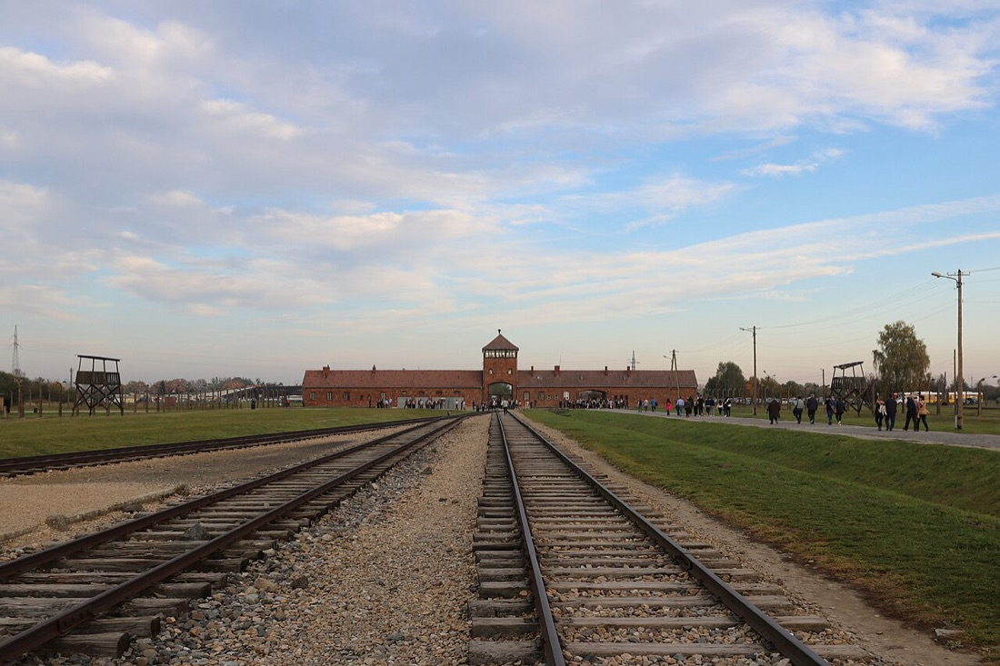
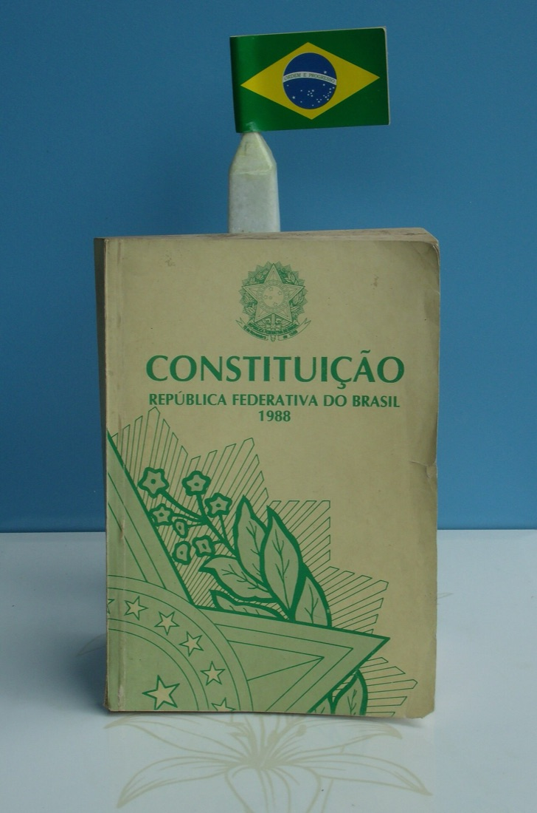
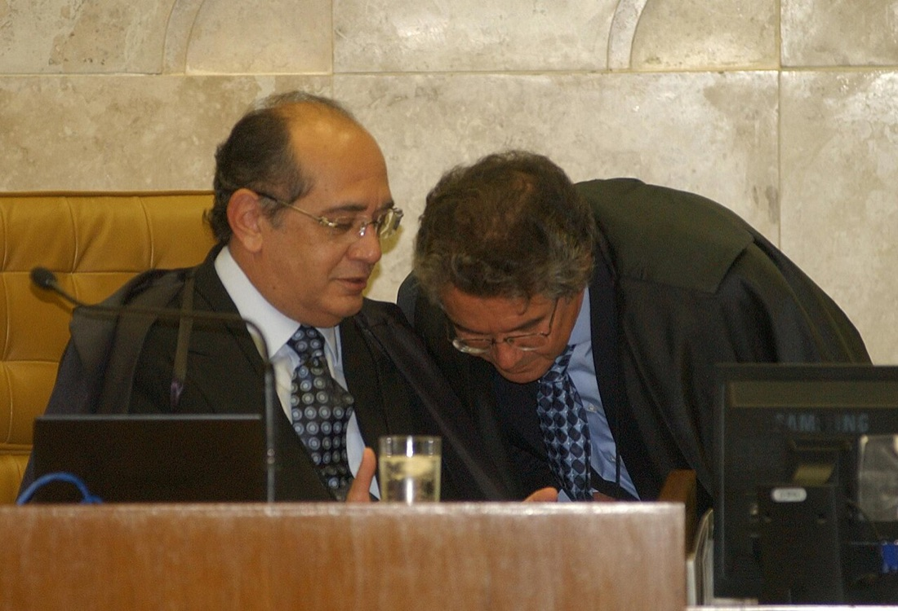
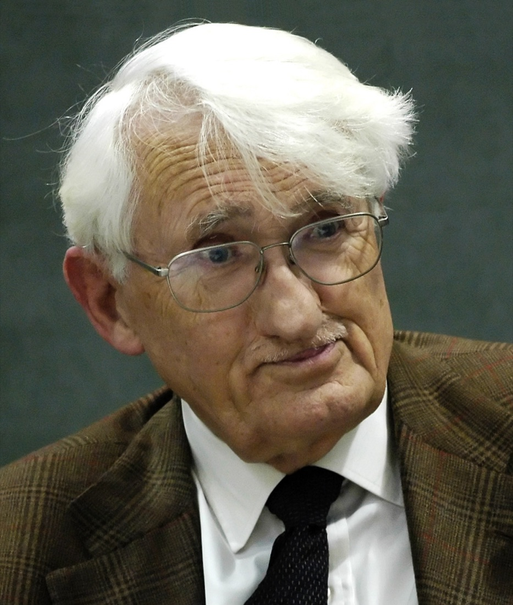

Crítica à ponderação
O caso Ellwanger

Quem pondera tem de justificar o peso.
E se dois juízes usam o mesmo método e justificam cada passo?
Chegam ao mesmo resultado?
O STF pondera
Proporcionalidade e ponderação no Supremo

Busca pela palavra “ponderação”:
334 acórdãos
“Em geral, o Tribunal faz um juízo de ponderação levando em conta várias variáveis [...].”Ministro do STF
“[...] a técnica que o Direito predominantemente adota para a solução dessa tensão ou desse conflito é precisamente a denominada ponderação.”Ministro do STF
O que é a ponderação?
O último passo do princípio da proporcionalidade.
O princípio da proporcionalidade
“Quanto maior é o grau de não satisfação ou de prejuízo de um dos princípios, tanto maior deve ser a importância da satisfação do outro.”Alexy
O caso Ellwanger
HC 82.424/RS · STF, 2003
Liberdade de expressão e discurso de ódio
Industrial, livreiro e escritor gaúcho.
Negava o Holocausto.

“Holocausto: judeu ou alemão? Nos bastidores da mentira do século”
Um dos livros que ele escreveu, editou e vendeu.
Publicar esses livros é...
liberdade de expressão ou crime?

O caminho do processo
Judeus não são uma raça. Sem raça, não há racismo. Sem racismo, o crime prescreveu.
STF: racismo é conceito social, não biológico.
Condenação mantida.
Habeas corpus negado por 8 a 3.
Dois ministros, o mesmo método.
Resultados opostos.

Gilmar Mendes
Aplica a proporcionalidade.
“Não se pode atribuir primazia à liberdade de expressão, no contexto de uma sociedade pluralista, em face de valores outros como os da igualdade e da dignidade humana.”Ministro Gilmar Mendes
A condenação é adequada, necessária e proporcional.
Mantém a condenação.
Marco Aurélio
Aplica a proporcionalidade.
“Cumpre perquirir se é razoável [...] restringir-se determinada manifestação de opinião por meio de um livro, ainda que preconceituosa e despropositada [...].”Ministro Marco Aurélio
Para ele, não há “mínimos indícios” de que o livro causaria violência no Brasil.
A condenação não é adequada, nem necessária, nem proporcional.
Concede a ordem.
O mesmo método. Resultados opostos.
Então o método serve para quê?
Onde eles discordam?
A proporcionalidade não responde a nenhuma das três.
A discricionariedade não some.
Ela se muda para o peso.
Direitos não são valores.
Se tudo se pondera, nenhum direito está garantido.

Para pesar valores, faltam critérios racionais.
O risco: decidir de modo arbitrário ou irrefletido.
A ponderação traz de volta o poder discricionário.
É o tema do Seminário 12.
O pós-positivismo nasceu para combater o poder discricionário do juiz.
A ponderação combate ou disfarça?
A ponderação não promete uma única resposta.
Promete uma decisão que se pode conferir e criticar.

Cada ministro teve de mostrar onde discorda do outro.
Sem os três passos, haveria só o resultado.
O uso do princípio da proporcionalidade é adequado para combater o poder discricionário do julgador?
Para levar
Seminário 12
Streck: por que a discricionariedade é um problema para Dworkin e não para Alexy
Vitor Medrado
Imagens do Wikimedia Commons: A Justiça (Filipo Tardim, CC BY-SA 4.0); Supremo Tribunal Federal (Leandro Neumann Ciuffo, CC BY 2.0); Auschwitz-Birkenau (Ingo Mehling, CC BY-SA 4.0); Constituição de 1988 (Moacir Ximenes, domínio público); Marco Aurélio e Gilmar Mendes (Fabio Rodrigues Pozzebom/ABr, CC BY 3.0 BR); Gilmar Mendes (Senado Federal, CC BY 2.0); Marco Aurélio (Anderson Riedel, CC BY 2.0); Jürgen Habermas (Wolfram Huke, CC BY-SA 3.0); Lenio Streck (DASEIN, domínio público); Robert Alexy (Contrib32523, CC BY-SA 4.0). Fotos recortadas.